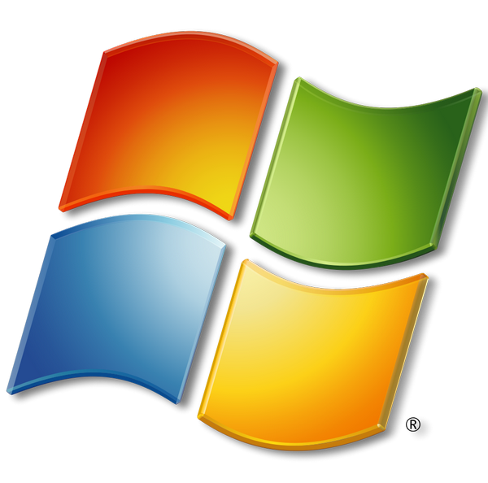
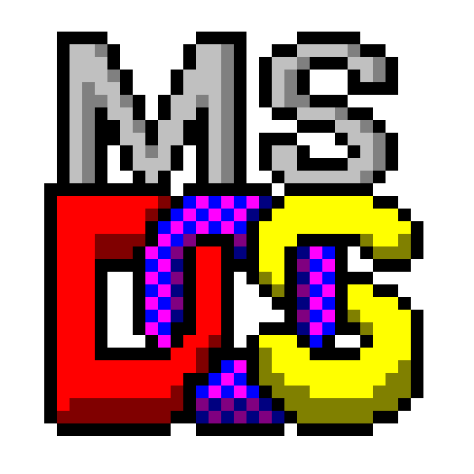
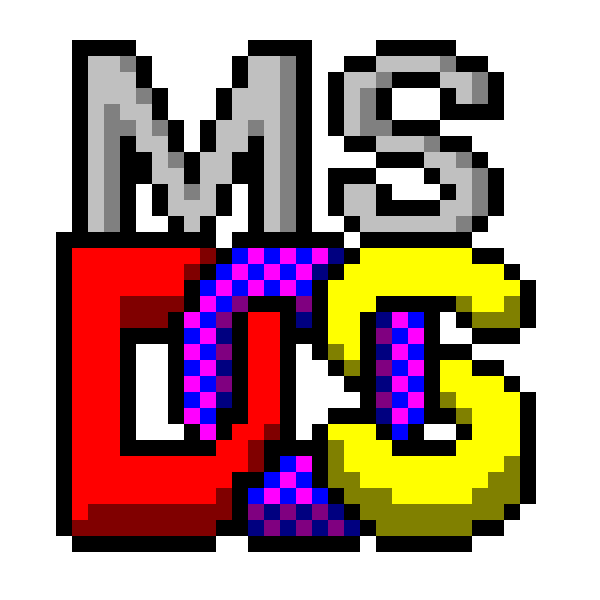
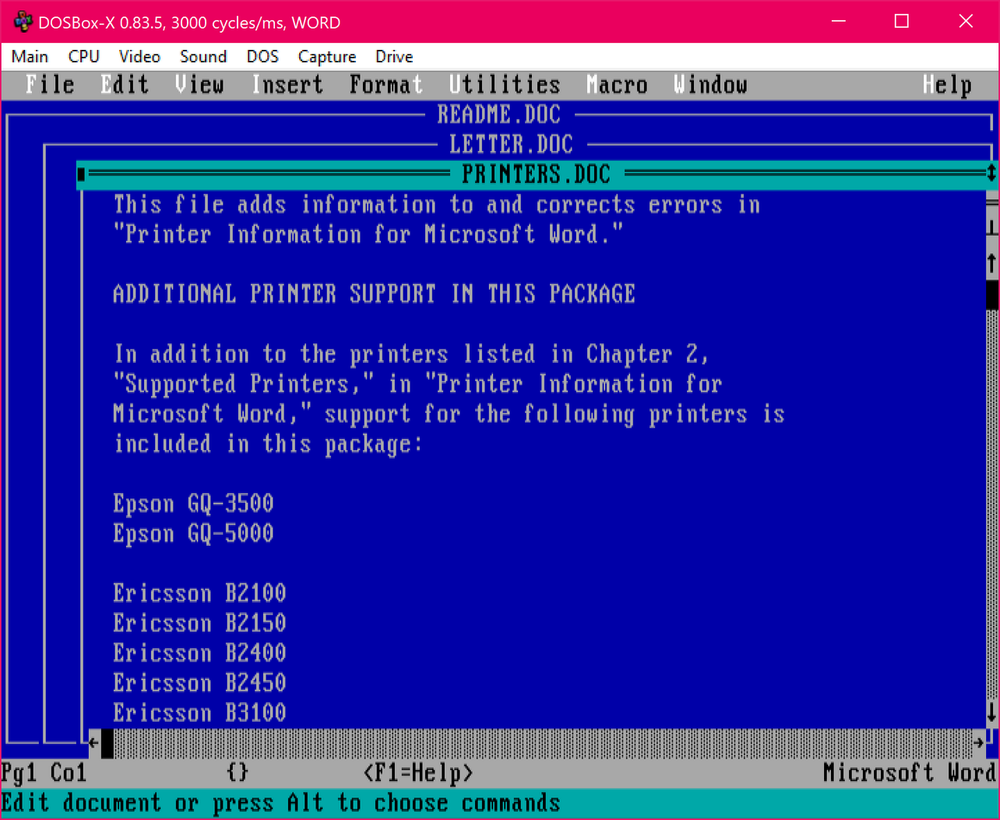
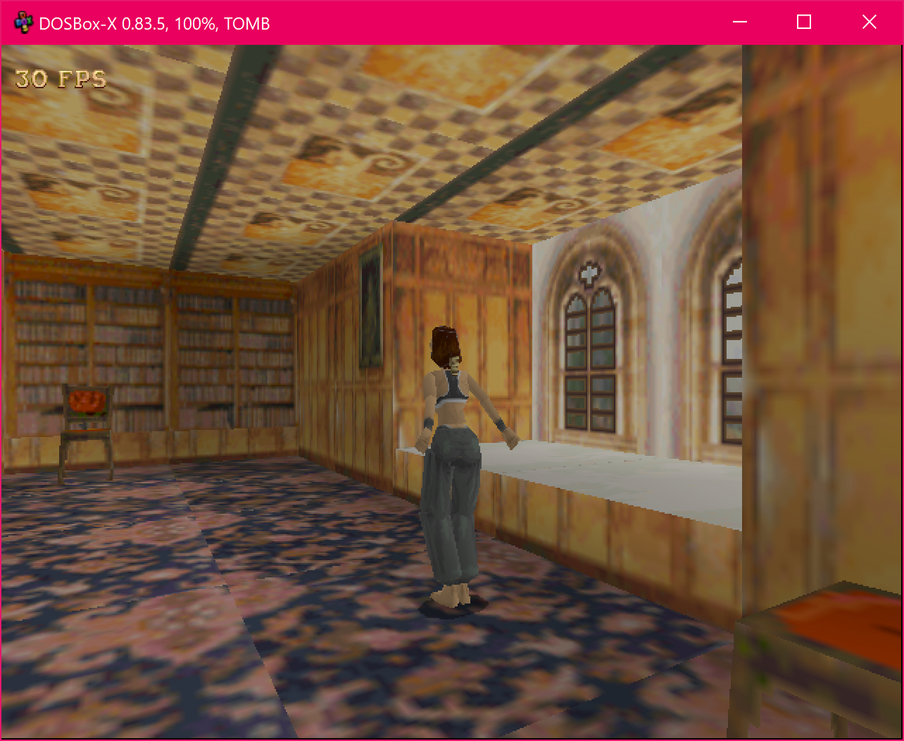
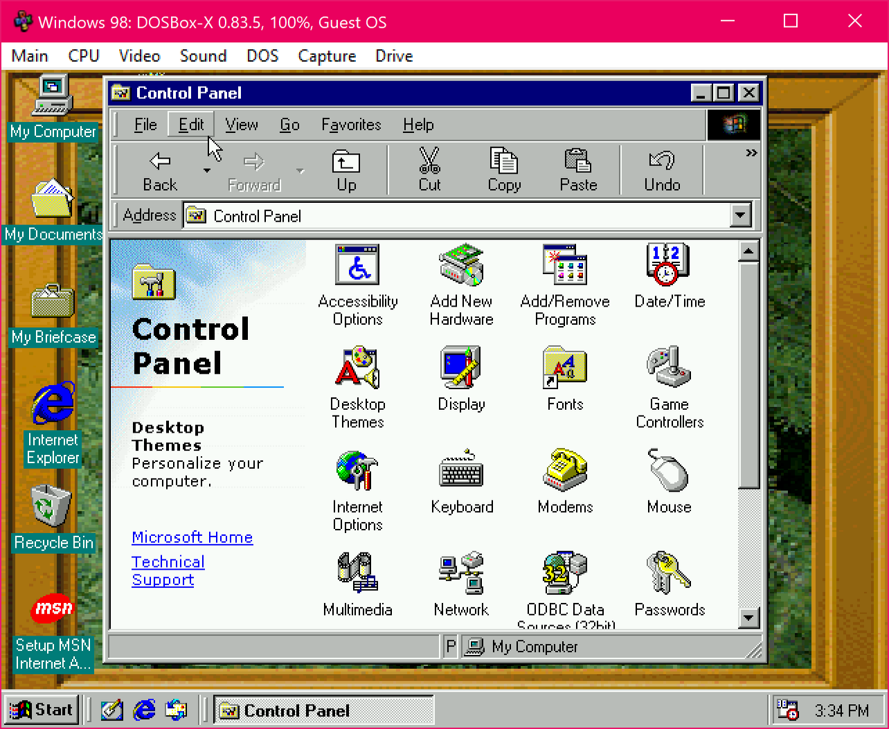

Latest Release: 0.83.5
Release Date: September 1, 2020
Supported Platforms:

 

Windows version:
Linux version:
macOS version:
DOS version:
Further information:
Issue, question, or suggestion?
|
DOSBox-X emulates a PC necessary for running many DOS games and applications that simply cannot be run on modern PCs and operating systems, similar to DOSBox. However, while the main focus of DOSBox is for running DOS games, DOSBox-X goes much further than this. Started as a fork of the DOSBox project, it retains compatibility with the wide base of DOS games and DOS gaming DOSBox was designed for. But it is also a platform for running DOS applications, including emulating the environments to run Windows 3.x, 9x and ME and software written for those versions of Windows. By adding official support for Windows 95, 98, and ME emulation and acceleration, we hope that those old Windows games and applications could be enjoyed or used once more.Our goal is to eventually make DOSBox-X a complete emulation package that is both fully-featured and easy to use. We implement new features with each official release, and also try our best to deliver a consistent cross-platform experience for users. In order to help improve the general DOS emulation and also to aid retro-development, it is our desire to maintain and implement more accurate emulation, but at the same time we are also making efforts to improve emulation quality, speed, and usability for end users. DOSBox-X features a flexible configuration, as we believe a better way to emulate the DOS platform is to give users all the options to configure the DOS virtual machine. We hope to improve the out-of-the-box experience for new users who want to run DOS programs or games, as well as implementing emulation that is accurate enough to make retro-programming possible with confidence the program will run properly on actual hardware.A few examples of DOSBox-X's unique features are available in the DOSBox-X's Feature Highlights page. Below are some screenshots of DOS programs or games running in DOSBox-X.
|
 |
 |
 |
| Word for DOS running in DOSBox-X |
Tomb Raider 3dfx running in DOSBox-X |
Windows 98 guest running in DOSBox-X |
DOSBox-X maintains a Wiki guide which explains how to set up DOSBox-X and configure various software to run in DOSBox-X. Also, as DOSBox-X is an open-source project, we strongly encourage users to contribute to DOSBox-X. Please visit our project website on GitHub for more information.
|
{kind=link}
{kind=link}
{kind=link}